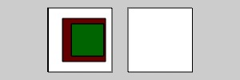

Boxes on the left render 'on top' of each other even though they render behind one another
in terms of the Z coordinate because depth testing was disabled.
The same boxes are rendered on the right with depth testing on.

// Test by Andor Salga
import processing.opengl.*;
void setup(){
size(300, 100, OPENGL);
translate(width/3, height/2, 0);
hint(DISABLE_DEPTH_TEST);
fill(255);
box(80,80,1);
translate(0,0,-10);
fill(100,0,0);
box(60,60,1);
translate(0,0,-10);
fill(0,100,0);
box(50,50,1);
translate(0,0,20);
translate(width/3, 0, 0);
hint(ENABLE_DEPTH_TEST);
fill(255);
box(80,80,1);
translate(0,0,-10);
fill(100,0,0);
box(60,60,1);
translate(0,0,-10);
fill(0,100,0);
box(50,50,1);
}